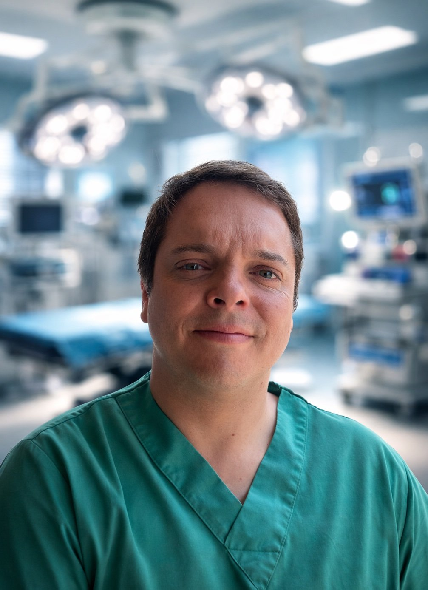

Referente en
Cirugía Torácica
en Latinoamérica
19 años de experiencia en cirugía oncológica torácica, robótica, broncoscopía intervencionista y trasplante pulmonar. Atención en Clínica Las Condes y Hospital Clínico San Borja Arriarán.
Áreas de especialización
Cirugía Torácica de Vanguardia
Cobertura completa en patología torácica con tecnología de última generación disponible en Chile.
rats.cl
Cirugía Robótica Torácica
Lobectomías, segmentectomías y timectomías con sistema Da Vinci. Máxima precisión, mínima invasión, recuperación acelerada.
Visitar rats.cl →cancerpulmonar.cl
Cáncer Pulmonar
Diagnóstico, estadificación y tratamiento quirúrgico del cáncer pulmonar en todas sus etapas resecables. Guía para pacientes y familias.
Visitar cancerpulmonar.cl →broncoscopia.cl
Broncoscopía Intervencionista
EBUS, CryoEBUS y técnicas avanzadas de diagnóstico endobronquial. Más de 3.200 procedimientos EBUS desde 2010.
Visitar broncoscopia.cl →vats.cl
VATS / Videotoracoscopía
Cirugía torácica mínimamente invasiva para patologías pleurales, pulmonares y mediastínicas sin toracotomía.
Visitar vats.cl →hiperhidrosis.cl
Hiperhidrosis
Simpatectomía torácica por videotoracoscopía. Más de 95% de éxito en el tratamiento definitivo del sudor excesivo de manos y axilas.
Visitar hiperhidrosis.cl →¿Quién busca esta información?
Recursos para pacientes
y para médicos
Información específica según tu perfil — paciente buscando orientación, o médico que necesita derivar a un especialista.
Para pacientes y familias
Información clara sobre patologías torácicas frecuentes, síntomas, diagnóstico y opciones de tratamiento — sin tecnicismos innecesarios.
Para médicos y referentes
Información técnica sobre procedimientos, indicaciones, plataformas tecnológicas disponibles y criterios de derivación directa.
Formación y trayectoria
Dr. David Lazo Pérez
Médico-Cirujano de la Pontificia Universidad Católica de Chile, con especialización en Cirugía General y Torácica por la Universidad de Chile y formación en Trasplante Pulmonar en el Hospital Universitario Puerta de Hierro Majadahonda, Madrid, España.
Con 19 años de experiencia y más de 5.700 cirugías torácicas, es el cirujano con mayor experiencia en EBUS en Chile (desde 2010, +3.200 procedimientos) y en cirugía robótica torácica RATS (desde 2015, +200 cirugías robóticas).
Regente para Chile de la Asociación Mundial de Broncología y Neumología Intervencionista (WABIP). Miembro de American College of Surgeons, IASLC, European Respiratory Society y ISHLT.
Activo en formación médica continua, desarrollo de programas quirúrgicos avanzados e innovación tecnológica en cirugía torácica a nivel latinoamericano.
Formación y cargos
Esp. Cirugía Torácica · U. de Chile
H. U. Puerta de Hierro Majadahonda, España
Asociación Mundial de Broncología y Neumología Intervencionista
Sociedades internacionales activas
Atención privada · Hospital San Borja Arriarán (público)

Especialista
Dr. David Lazo Pérez
Cirujano Torácico · Broncoscopía Intervencional
Médico-cirujano de la Pontificia Universidad Católica de Chile, con especialización en Cirugía Torácica por la Universidad de Chile y formación en Trasplante Pulmonar en el Hospital Universitario Puerta de Hierro Majadahonda, España.
Con 19 años de experiencia, es el cirujano con mayor experiencia en EBUS en Chile (desde 2010, +3.200 procedimientos) y pionero en la técnica CryoEBUS a nivel latinoamericano. Regente para Chile de la Asociación Mundial de Broncología y Neumología Intervencionista (WABIP).
Primer paso
Hable directamente
con el especialista

Dr. David Lazo Pérez
Cirujano Torácico